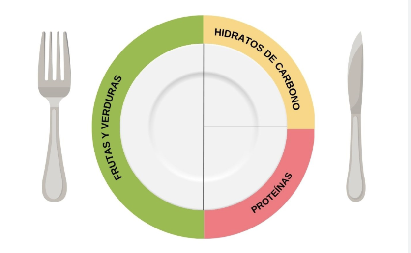
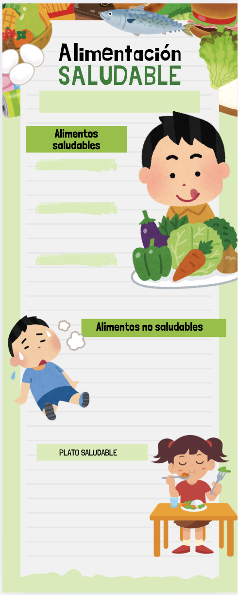

Sesión 3
Hoy vamos a crear nuestro propio plato saludable. Con estas revistas de los supermercados tenéis que buscar aquellos alimentos que deben ir en el color rojo, en el verde y en el amarillo. Debéis recortarlos y pegarlos en el lugar correcto.

Sesión 4
Hoy vamos hacer una cosa muy divertida, una infografía. ¿A qué os suena esta palabra?, ¿alguien sabe que es?.
Una infografía es como si fuera un cartel con imágenes. Como estamos trabajando la alimentación saludable, ¿de qué podremos hacer nuestra infografía?
Mirad esta va a ser nuestra plantilla... si vamos hacerla sobre la alimentación saludable, ¿qué imágenes tendremos que buscar? ,¿y si buscamos alimentos saludables y alimentos no tan saludables?, ¿qué tres tipos de alimentos conocemos?, ¿os parece poner una foto de cómo debe ser un plato para que sea saludable?.
